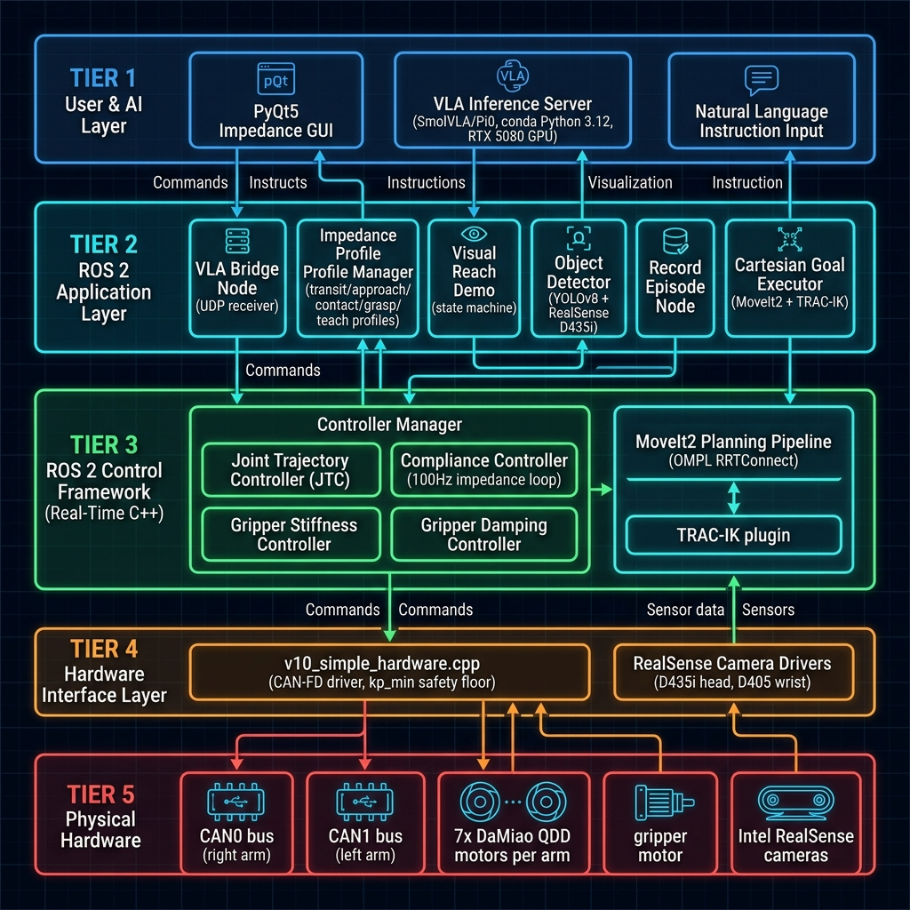

AI Chat with Dr. L
Robotic Kinematics & Controls Knowledge Base
Interactive Visual Schematics
Full architectural maps of our OpenArm V10 system. Click the selectors to switch diagrams.

Impedance Parameter Tuning
Simulate a single OpenArm rotary joint under our impedance law in real-time. Pull the joint on the right to disturb it, and tune the sliders to observe physical behavior.
Live Physical Oscillation
Stable
Target Pose
Actual Joint Position
Loading repository files...